Unofficial study solution; not an official GTU answer key. Answers have not been independently verified. English text reflows; source equations, diagrams and Gujarati retain their original appearance. Use Enlarge image to inspect them.
આ બિનસત્તાવાર અભ્યાસ ઉકેલ છે, સત્તાવાર GTU જવાબવહી નથી. PDF માંથી ગુજરાતી લખાણ સાચું નીકળતું નથી, તેથી દરેક જવાબ મૂળ ચિત્રરૂપે જાળવ્યો છે. વાંચવા માટે ચિત્ર મોટું કરો. મૂળ પ્રશ્ન અને પરીક્ષાના વિકલ્પોની સૂચનાઓ અનુસરો.
Coverage: all five questions and every printed OR alternative are answered: 28 parts. The authentic English question is retained in both language views; answers are in English and Gujarati.
Printed instructions: attempt all questions; make suitable assumptions; figures on the right indicate full marks; simple and non-programmable scientific calculators are permitted; the English version is authentic.
Important data caveat: Q2(c) states 75 kmol A reacts but only 60 kmol C forms for A + B → C. These numbers are inconsistent if that is the only reaction; the answer explicitly compares yield bases and explains the limitation. All other conventions are stated with their calculations.
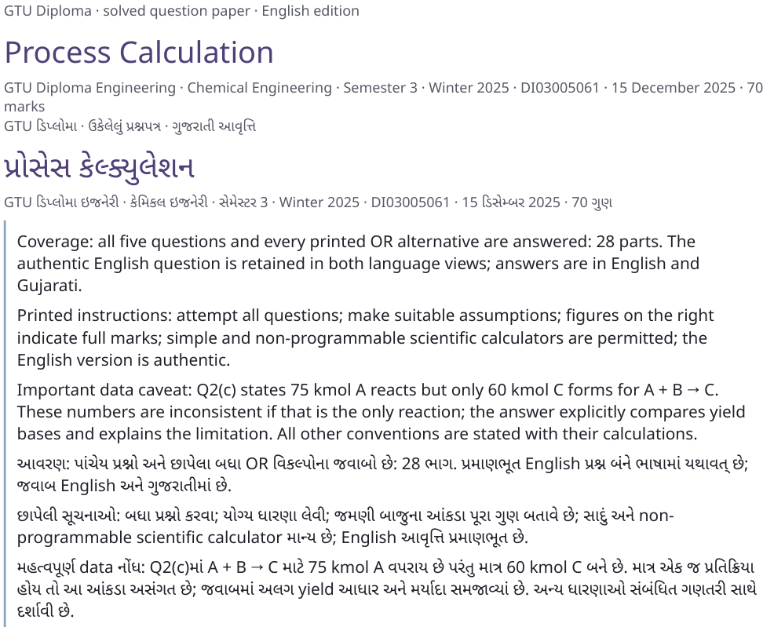
Question 1
Q1 · Recycle, limiting reactants and separation balances
Q.1 (a) · Define recycle operation. · 3 marks
Recycle returns part of a process outlet to an earlier point, normally mixing it with fresh feed. Separation can recover unreacted material before it returns to the reactor.
1. Fresh feed and recycle mix before the process unit.
2. A separator removes product and returns suitable unreacted material.
3. The recycle can improve overall raw-material utilisation; inert build-up may require a purge.
Example: recover unreacted ammonia-synthesis gases and return them to the reactor.
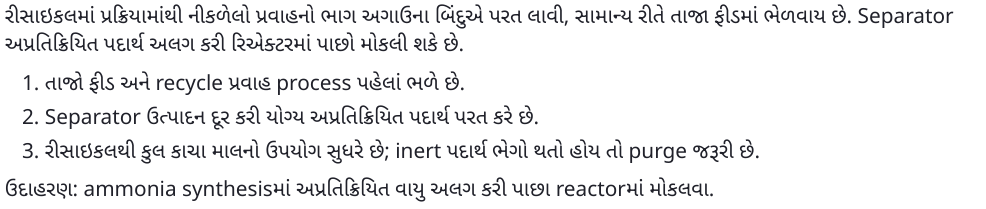
Q.1 (b) · Explain limiting reactant. · 4 marks
The limiting reactant is exhausted first for the stated feed and reaction stoichiometry; it fixes the maximum possible extent when conversion is complete.
For each reactant compare feed moles divided by its stoichiometric coefficient. The smallest value is limiting, assuming only the stated reaction.
Example: A + 2B → C, feed 3 mol A and 4 mol B. The available extents are 3 and 2 mol, so B limits the reaction; at most 2 mol C forms.
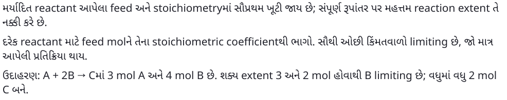
Q.1 (c) · A solid is dried from 30% to 10% moisture (wet basis). Calculate the water removed per 100 kg of feed. · 7 marks

Solids remain in the product; water is removed.
Given, basis and assumptions
Basis: 100 kg wet feed; 30% and 10% moisture are both on the wet-product basis.
Assume dry solids are nonvolatile and all water removed leaves separately.
Step-by-step solution
1. Feed components — Water in feed = 30 kg; dry solids = 100 − 30 = 70 kg.
2. Solids balance — Product has 90% solids: 0.90 P = 70 kg.
4. Water removed — W = 100 − 77.7778 = 22.2222 kg.
Water removed ≈ 22.22 kg per 100 kg wet feed.
Check: product water = 0.10 × 77.7778 = 7.7778 kg; 30 − 7.7778 = 22.2222 kg.
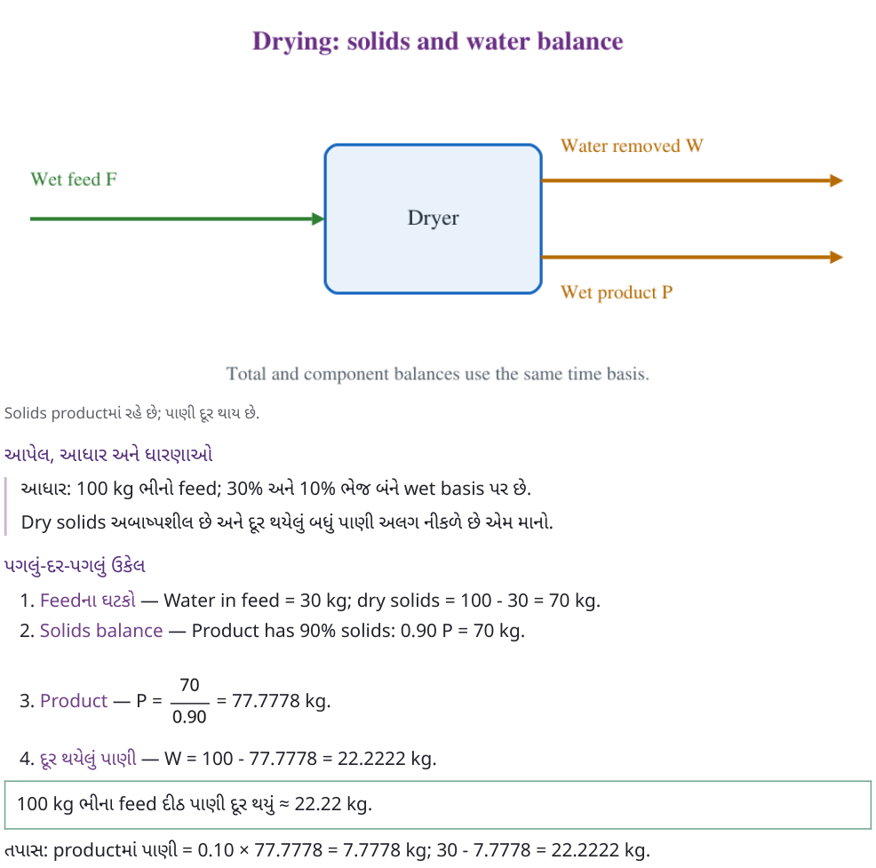
Q.1 (c) · A continuous binary mixture containing benzene (B) and toluene (T) is fed to a distillation column at a rate of 100 kmol/h with 40 mol% benzene. The distillate is withdrawn at 95 mol% benzene and the bottoms product contains 10 mol% benzene. Calculate the distillate and bottoms flowrates (kmol/h). (Basis: 100 kmol/h feed). · OR · 7 marks

Feed separates into distillate and bottoms.
Given, basis and assumptions
Basis: 100 kmol/h feed; benzene mole fractions are 0.40, 0.95 and 0.10 in feed, distillate and bottoms.
Assume steady state, binary streams, no reaction and no other products.
Step-by-step solution
1. Total balance — D + B = 100 kmol/h.
2. Benzene balance — 0.95D + 0.10B = 0.40(100) = 40 kmol/h.
3. Substitute — 0.95D + 0.10(100 − D) = 40; 0.85D = 30.
4. Streams — D = 35.2941 kmol/h; B = 100 − D = 64.7059 kmol/h.
Distillate D ≈ 35.29 kmol/h; bottoms B ≈ 64.71 kmol/h.
Check: benzene out = 0.95(35.2941) + 0.10(64.7059) = 40 kmol/h.
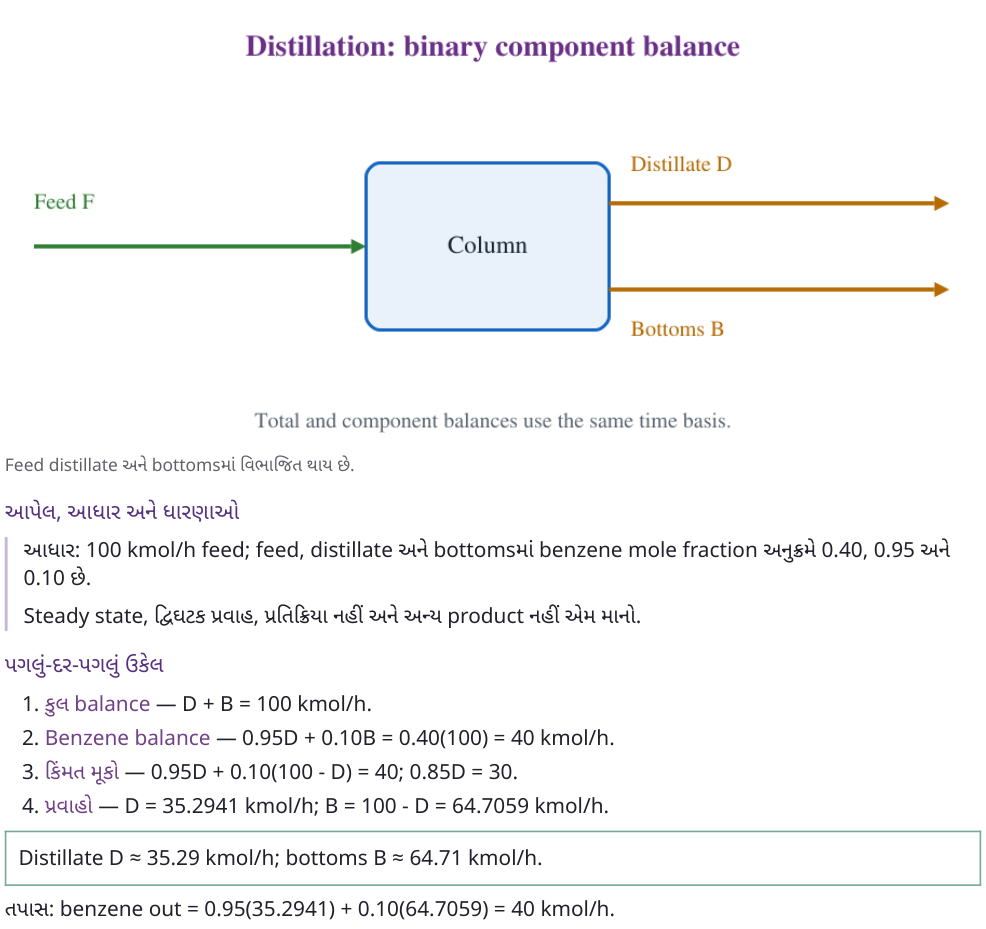
Question 2
Q2 · Purge, bypass and reaction yields
Q.2 (a) · What is purging in recycle operation? · 3 marks
A purge is the controlled removal of a small part of a recycle stream from the process. It prevents inert or unwanted components from accumulating.
Example: bleed inert gases from an ammonia loop. Purge removes some useful reactant too, so its rate balances loss against build-up.
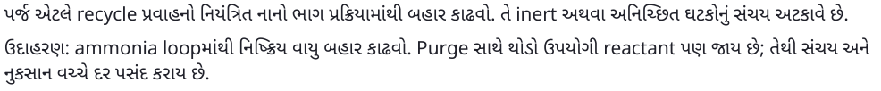
Q.2 (b) · Explain bypass operation with example · 4 marks
In bypass, a portion of fresh feed avoids a process unit and is mixed with the treated stream downstream.

The bypass joins the treated stream; it is not a recycle.
1. Split the feed into treated and bypass streams.
2. Treat one part, then mix it with the untreated part.
3. Use total and component balances across both the unit and mixer.
Example: bypass part of wet feed around a dryer to control the final moisture.
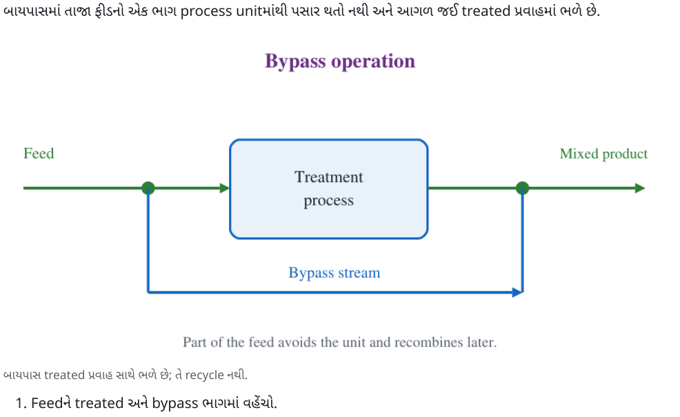

Q.2 (c) · In a reaction: A + B → C, the feed contains 100 kmol of A and 200 kmol of B. If 75 kmol of A reacts and 60 kmol of C is formed, calculate % conversion of A and yield of C · 7 marks

The two reported amounts are inconsistent for the sole stated reaction.
Given, basis and assumptions
Basis: the stated 100 kmol A feed and 200 kmol B feed; 75 kmol A reacts and 60 kmol C forms.
For yield, take 1 kmol C as the theoretical product per kmol A; explicitly distinguish feed and reacted bases.
Step-by-step solution
1. Limiting feed — A + B → C requires 1:1; A limits the feed (100 kmol A versus 200 kmol B).
Conversion = 75%; C yield = 60% on feed basis, or 80% on reacted-A basis.
Important inconsistency: if A + B → C is the only reaction and all stated A reacts through it, 75 kmol A must form 75 kmol C, not 60. The data therefore need an unreported side reaction, loss or correction; the two yield percentages above describe the given numbers, not a complete single- reaction balance.
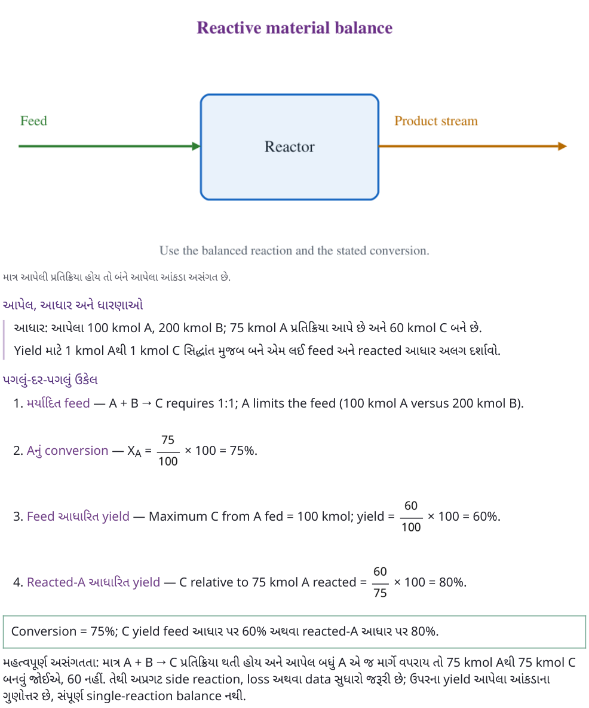
Q.2 (a) · Explain excess reactant. · OR · 3 marks
An excess reactant is fed in more than the stoichiometric amount needed to react completely with the chosen limiting-reactant feed.

The denominator is the stoichiometric requirement for the feed, not the amount actually consumed at incomplete conversion.

Q.2 (b) · Explain the importance of material balance in industry · OR · 4 marks
A material balance applies conservation of mass to a specified system and time interval.
Accumulation = input − output + generation − consumption
• It calculates unknown feed, product and waste streams and checks operating data.
• It supports equipment sizing, raw-material procurement, yield improvement and process control.
• It identifies material loss and helps plan waste treatment and environmental compliance.
At steady state accumulation is zero; for a non-reacting component, generation and consumption are also zero. Example: water removed in a dryer.

Q.2 (c) · Methanol is manufactured by the reaction: CO+2H2→CH3OH If 100 kmol CO and 250 kmol H₂ are fed to the reactor and 85 kmol methanol is produced, calculate: (i) Conversion of CO (ii) Yield of methanol (iii) % excess H₂. · OR · 7 marks

The extent is determined by methanol formed only under the stated assumption.
Given, basis and assumptions
Basis: 100 kmol CO and 250 kmol H₂ feed; 85 kmol CH₃OH formed.
Assume CO + 2H₂ → CH₃OH is the only reaction and no methanol is lost.
Step-by-step solution
1. Limiting reactant — For 100 kmol CO, H₂ required = 2(100) = 200 kmol. CO is limiting.
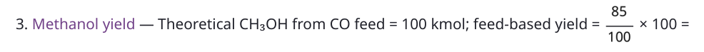
85%.
5. Outlet check — CO left = 15 kmol; H₂ left = 250 − 2(85) = 80 kmol; CH₃OH = 85 kmol.
CO conversion = 85%; feed-based methanol yield = 85%; excess H₂ = 25%.
Yield on CO reacted is 100% under the sole-reaction assumption. If CO also reacts by other routes or product is lost, conversion cannot be deduced from methanol production alone.
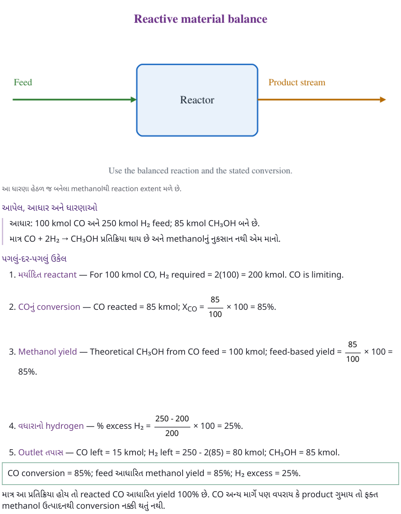
Question 3
Q3 · Ratios, conversion and heat capacities
Q.3 (a) · Define recycle ratio. · 3 marks
mass or molar basis.
unit is 140 kmol/h if these are the only streams.
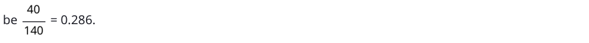
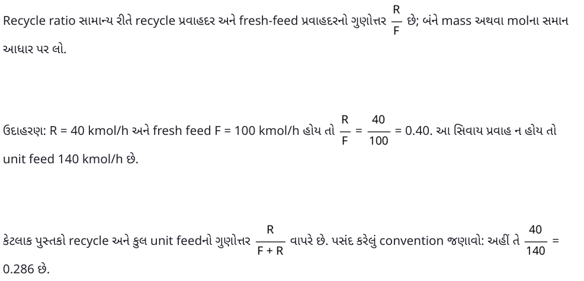
Q.3 (b) · Differentiate between conversion and yield. · 4 marks

Feed-based yield is desired product obtained divided by the theoretical desired product from the

Conversion concerns reactant disappearance; yield concerns desired product. Their denominators must be stated because courses also define yield on reactant reacted.
Example: 100 mol A fed, 75 mol A reacts and 60 mol C forms, with 1 mol C theoretically per mol A:
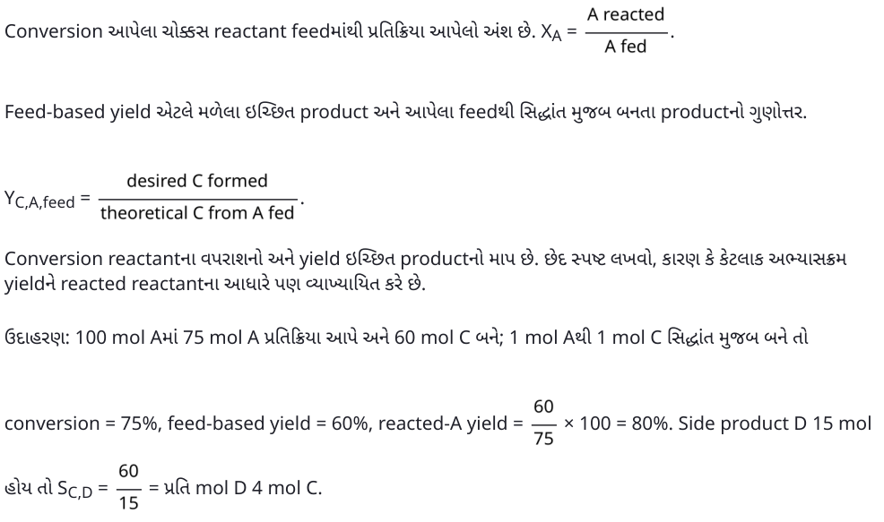
Q.3 (c) · Derive relation between Cp and Cv for an ideal gas · 7 marks
For an ideal gas, the molar internal energy u and enthalpy h depend only on temperature. Use a consistent molar basis.
1. By definition h = u + pv. For an ideal gas pv = R̄ T, hence h = u + R̄ T.
2. Differentiate: dh = du + R̄ dT.


4. Therefore Cp = Cv + R̄ .
Cp − Cv = R̄ (ideal gas, molar basis)
The heat capacities and R̄ must use matching units. On a mass basis use the specific gas constant


Q.3 (a) · Define Purge Ratio · OR · 3 marks
is the purge, and R is the returned recycle: S = P + R.
denominator and use a consistent mass or molar basis.
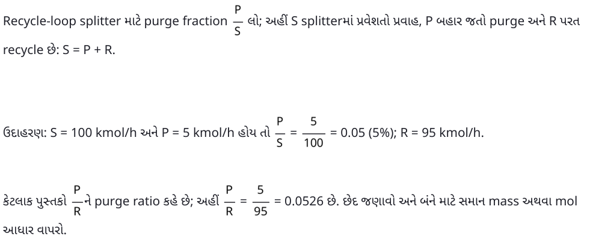
Q.3 (b) · Differentiate between recycle and purge · OR · 4 marks
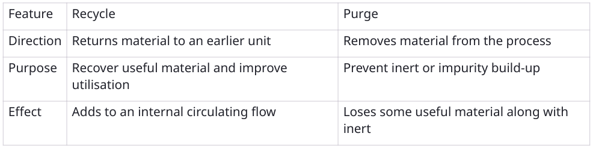
A plant may use both simultaneously: a splitter returns most recovered gas and bleeds a small portion as purge.
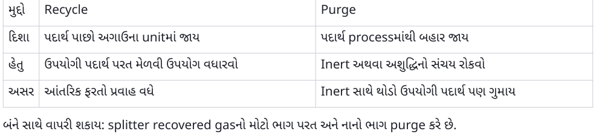
Q.3 (c) · Explain sensible heat, latent heat of fusion, latent heat of sublimation and latent heat of vaporization · OR · 7 marks
Sensible heat: heat that changes temperature without a phase change, e.g. warming liquid water from 20 °C to 30 °C.
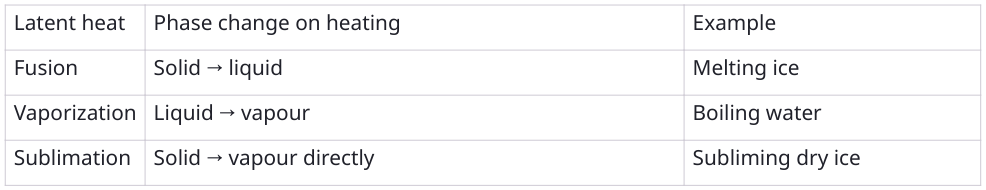
Latent heat is energy per unit mass or mole for a phase change at the specified pressure and phase-equilibrium temperature. At fixed pressure, Q = mL for a complete change; the reverse process releases the corresponding heat.
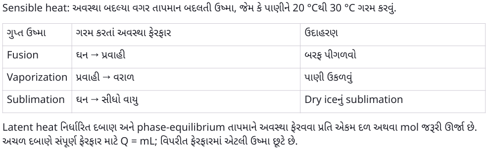
Question 4
Q4 · Reaction enthalpy and Hess’s law
Q.4 (a) · State difference between exothermic and endothermic reaction. · 3 marks
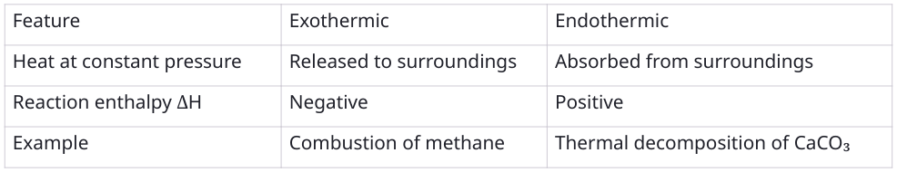
ΔH is products minus reactants at specified temperature and phases. A heat source may be needed to start an exothermic reaction despite its negative overall ΔH.
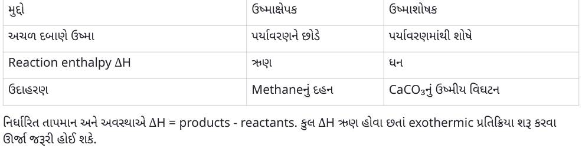
Q.4 (b) · Calculate the standard enthalpy change for the combustion of propane: C3H8 + 5 O2 → 3 CO2 + 4 H2O Given: ΔHf° (C3H8) = –104 kJ/mol ΔHf° (CO2) = –394 kJ/mol ΔHf° (H2O) = –286 kJ/mol · 4 marks
Given, basis and assumptions
Basis: 1 mol C₃H₈; C₃H₈ + 5O₂ → 3CO₂ + 4H₂O.
Use given ΔH°f in kJ/mol; ΔH°f of O₂(g) = 0. The −286 value corresponds approximately to liquid water; use consistent standard states.
Step-by-step solution
1. Formation enthalpy rule — ΔH°rxn = ΣνΔH°f,products − ΣνΔH°f,reactants.
2. Products — 3(−394) + 4(−286) = −2,326 kJ.
3. Reactants — (−104) + 5(0) = −104 kJ.
4. Reaction enthalpy — ΔH°rxn = −2,326 − (−104) = −2,222 kJ per mol C₃H₈.
ΔH°rxn = −2,222 kJ/mol propane (with the given water formation value).
The negative sign indicates an exothermic reaction. A water-vapour product needs its own formation enthalpy.
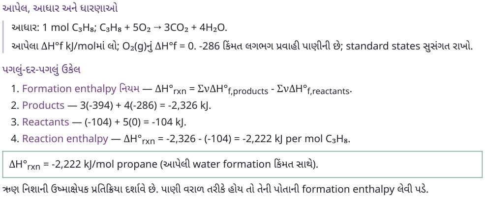
Q.4 (c) · The heat of combustion of C2H4 is –1411 kJ/mol. The heat of combustion of C = – 394 kJ/mol and H2 = –286 kJ/mol. Calculate the heat of formation of C2H4 using Hess’s Law. · 7 marks
Given, basis and assumptions
Basis: formation of 1 mol C₂H₄ from standard elemental C and H₂.
Combustion data in kJ/mol: C₂H₄ = −1,411; C = −394; H₂ = −286. Use the same H₂O phase and reference state in all reactions.
Step-by-step solution
1. Balance combustion — C₂H₄ + 3O₂ → 2CO₂ + 2H₂O.
2. Combust the elements — 2C + 2H₂ + 3O₂ → 2CO₂ + 2H₂O; ΔH = 2(−394) + 2(−286) = −1,360 kJ.
3. Hess cycle — ΔH°f,C₂H₄ + (−1,411) = −1,360 kJ.
4. Formation enthalpy — ΔH°f,C₂H₄ = −1,360 + 1,411 = +51 kJ/mol.
Heat of formation of C₂H₄ = +51 kJ/mol under the given data.
The positive result is for 2C(standard) + 2H₂ → C₂H₄, not the combustion reaction. The −286 value is consistent with liquid water.
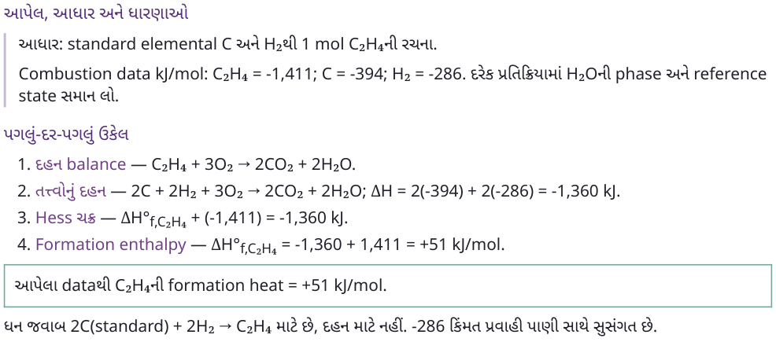
Q.4 (a) · Differentiate between GCV and NCV. · OR · 3 marks
Calorific value is the heat released by complete combustion per unit mass of fuel (or per unit volume for a gas at stated reference conditions).
Gross calorific value (GCV or HHV) includes the heat recovered if product water is condensed to liquid at the specified reference state. Net calorific value (NCV or LHV) leaves product water as vapour, so its condensation heat is not recovered.
NCV = GCV − (mass of water left as vapour per unit fuel) × (latent heat at the reference state)
GCV ≥ NCV for the same fuel and reference conditions. Water can arise from fuel hydrogen, fuel moisture and incoming air moisture; include only the quantities specified or assumed.
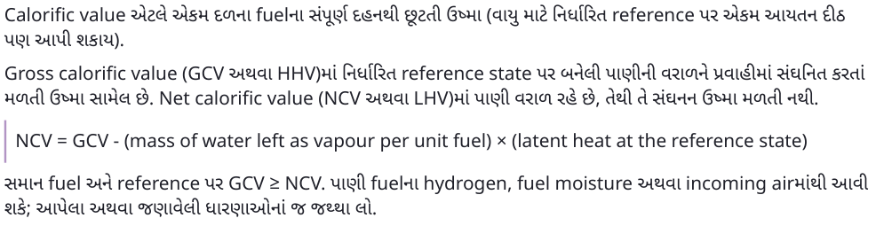
Q.4 (b) · Calculate the standard heat of reaction for the process: CH4 + 2 O2 → CO2 + 2 H2O Given data: ΔHf° (CO2) = –393.5 kJ/mol ΔHf° (H2O,liquid) = –285.8 kJ/mol ΔHf° (CH4) = –74.8 kJ/mol ΔHf° (O2) = 0 kJ/mol · OR · 4 marks
Given, basis and assumptions
Basis: 1 mol CH₄; CH₄ + 2O₂ → CO₂ + 2H₂O(l).
Given formation enthalpies: CO₂ −393.5, H₂O(l) −285.8, CH₄ −74.8 and O₂ 0 kJ/mol.
Step-by-step solution
1. Products — −393.5 + 2(−285.8) = −965.1 kJ.
2. Reactants — −74.8 + 2(0) = −74.8 kJ.
3. Heat of reaction — ΔH°rxn = −965.1 − (−74.8) = −890.3 kJ/mol CH₄.
Standard reaction enthalpy = −890.3 kJ per mol CH₄.
Water is liquid as stated; if water leaves as vapour, a different ΔH° value applies.
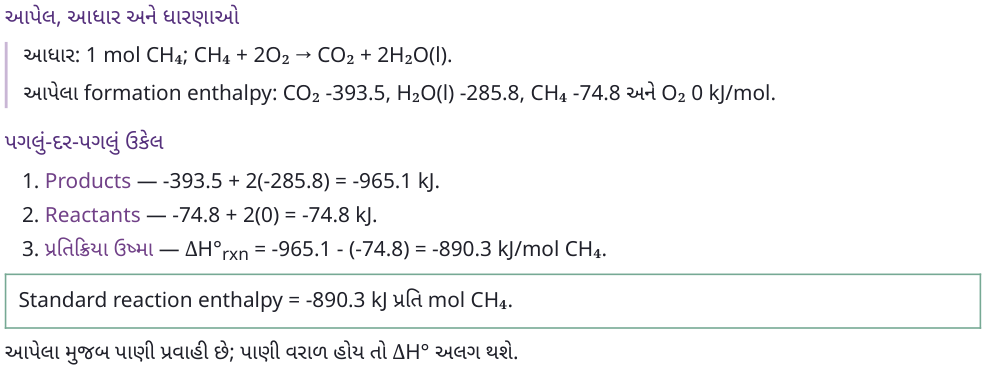
Q.4 (c) · The heat of formation of CO = –110 kJ/mol, CO2 = –394 kJ/mol. Using Hess’s Law, calculate the heat of reaction for: 2CO + O2 → 2CO2 · OR · 7 marks
Given, basis and assumptions
Basis: reaction as written, 2CO + O₂ → 2CO₂.
At the specified standard state: ΔH°f(CO) = −110, ΔH°f(CO₂) = −394, ΔH°f(O₂) = 0 kJ/mol.
Step-by-step solution
1. Products — 2(−394) = −788 kJ.
2. Reactants — 2(−110) + 0 = −220 kJ.
3. Hess calculation — ΔH°rxn = −788 − (−220) = −568 kJ per reaction as written.
ΔH° = −568 kJ for 2 mol CO, or −284 kJ/mol CO.
The negative sign indicates heat release at constant pressure.
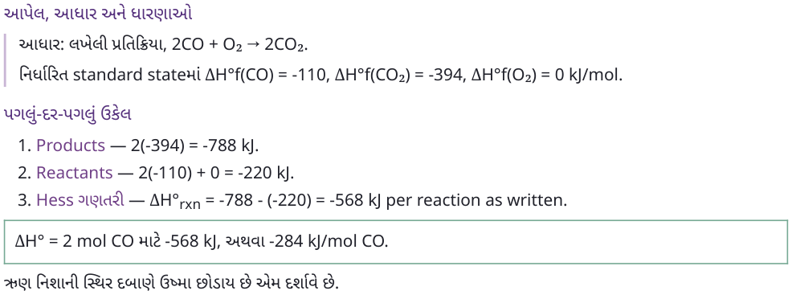
Question 5
Q5 · Fuels, combustion and air requirements
Q.5 (a) · Explain types of fuel · 3 marks
Fuels are commonly classified by physical state:
• Solid: coal, coke, wood or biomass; normally handled as lumps or powder.
• Liquid: diesel, fuel oil or kerosene; pumped and often atomised before burning.
• Gaseous: natural gas, LPG vapour or producer gas; mix readily with air.
They can also be classified as natural or manufactured. Calorific value, moisture, ash, availability and emissions influence selection.

Q.5 (b) · Explain Hess's law. · 4 marks
Hess’s law: the enthalpy change of an overall reaction is independent of the path, provided the initial and final states are the same.
1. Write balanced reactions whose algebraic sum is the target reaction.
2. Multiply each reaction and its ΔH by the same factor; reverse a reaction by reversing the sign of ΔH.
3. Cancel common species and add the adjusted enthalpy changes.
ΔH°rxn = ΣνΔH°f,products − ΣνΔH°f,reactants
Use consistent temperature, standard states and phases. Enthalpies of elements in their standard states, such as O₂(g), are zero.
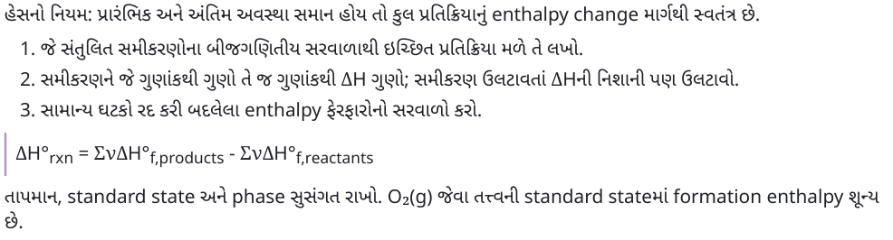
Q.5 (c) · Methane is burnt with 20% excess air. Calculate dry flue gas composition · 7 marks

The material balance shown is for complete combustion.
Given, basis and assumptions
Basis: 1 mol CH₄ burned completely with 20% excess air.
Assume dry air contains 21 mol% O₂ and 79 mol% N₂; neglect fuel nitrogen, argon and inerts. Dry flue gas excludes water.
Step-by-step solution
1. Reaction — CH₄ + 2O₂ → CO₂ + 2H₂O.
2. Oxygen supplied — Theoretical O₂ = 2 mol; actual O₂ = 1.20(2) = 2.40 mol; unused O₂ = 0.40 mol.
4. Dry products — CO₂ = 1; O₂ = 0.40; N₂ = 9.02857 mol. Dry total = 10.42857 mol.
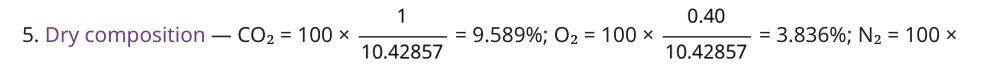
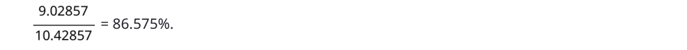
Dry flue gas: CO₂ ≈ 9.589 mol%, O₂ ≈ 3.836 mol%, N₂ ≈ 86.575 mol%.
The 2 mol water produced is excluded from the dry total. Mole% equals volume% for ideal gases at the same conditions.
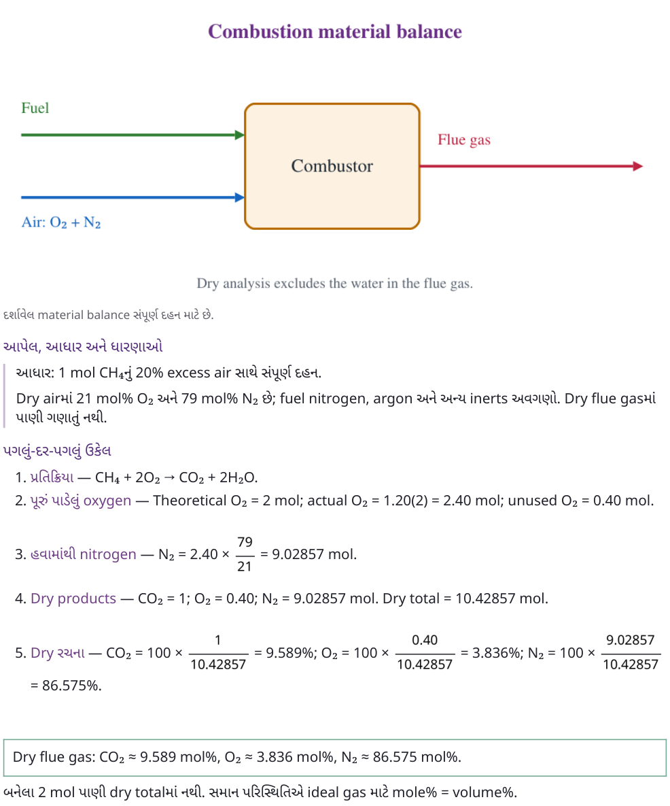
Q.5 (a) · Differentiate between theoretical air and excess air. · OR · 3 marks
Theoretical (stoichiometric) air supplies exactly the oxygen required for complete combustion of the specified fuel, with no oxygen in excess.
Excess air is the amount supplied beyond that theoretical requirement.
For the same air composition, the ratio can equivalently use actual and theoretical O₂. Excess air is not the percentage of the actual air feed.
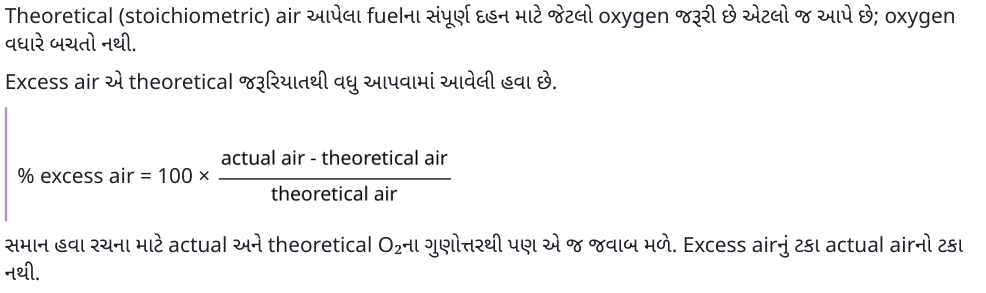
Q.5 (b) · Calculate the theoretical air required for complete combustion of 1 mole of propane (C₃H₈). · OR · 4 marks
Given, basis and assumptions
Basis: 1 mol C₃H₈; complete combustion. Assume dry air is 21 mol% O₂ and 79 mol% N₂.
Step-by-step solution
1. Balanced reaction — C₃H₈ + 5O₂ → 3CO₂ + 4H₂O.
2. Theoretical oxygen — O₂ required = 5 mol per mol propane.
4. Nitrogen check — Air contains 5 mol O₂ and 23.8095 − 5 = 18.8095 mol N₂.
Theoretical air ≈ 23.81 mol per mol propane (21% O₂ air).
This is a molar amount, not a mass or volume at unspecified conditions.
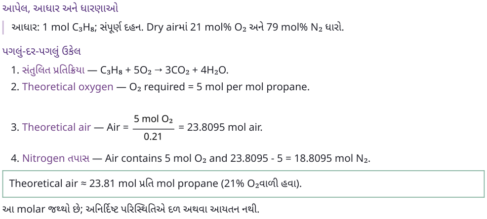
Q.5 (c) · Explain Proximate analysis and Ultimate analysis. · OR · 7 marks
Proximate analysis describes a solid fuel by moisture, volatile matter, ash and fixed carbon, typically as mass percentages on a stated basis.
1. Measure moisture by drying under the specified standard method.
2. Determine volatile matter by prescribed heating without air; determine ash from the remaining inorganic residue after complete combustion.
3. Fixed carbon is normally calculated by difference: 100 − moisture% − volatile matter% − ash%.
Ultimate analysis determines elemental composition, normally C, H, N, S and O, with ash/moisture stated separately as appropriate; oxygen is often found by difference.
Proximate analysis helps assess handling and burning behaviour; ultimate analysis supports combustion-air, flue-gas and heating-value calculations. Report the basis (as received, dry, or dry ash-free).
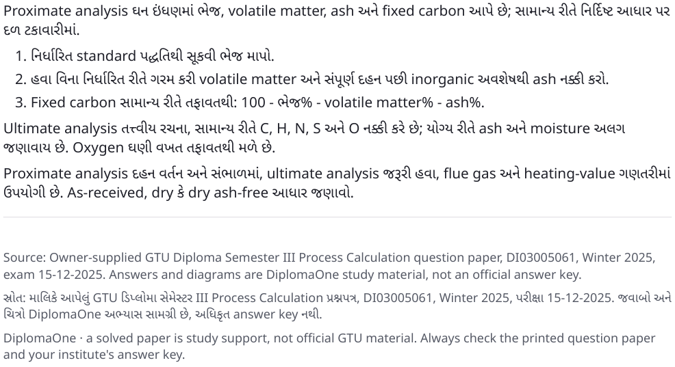